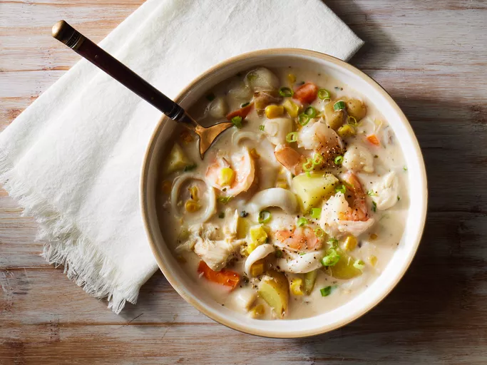

Seafood Chowder

Description
This creamy seafood chowder is loaded with shrimp, scallops, crab, clams, and calamari for loads of seafood flavor.
Ingridients
- 1 (8 ounce) container fat-free cream cheese
- 1 ½ cups fat-free milk
- 2 cloves garlic, minced
- 1 (23 ounce) can fat-free condensed cream of mushroom soup
- 1 (15.25 ounce) can whole kernel corn, undrained
- 1 ½ cups potatoes, chopped into small cubes
- 1 cup chopped green onions
- 1 cup diced carrots
- 1 teaspoon dried parsley
- ½ teaspoon ground black pepper
- ½ teaspoon ground cayenne pepper
- ½ pound shrimp
- ½ pound bay scallops
- ½ pound crabmeat
- ½ pound calamari tubes
- 1 (6.5 ounce) can chopped clams
Go back